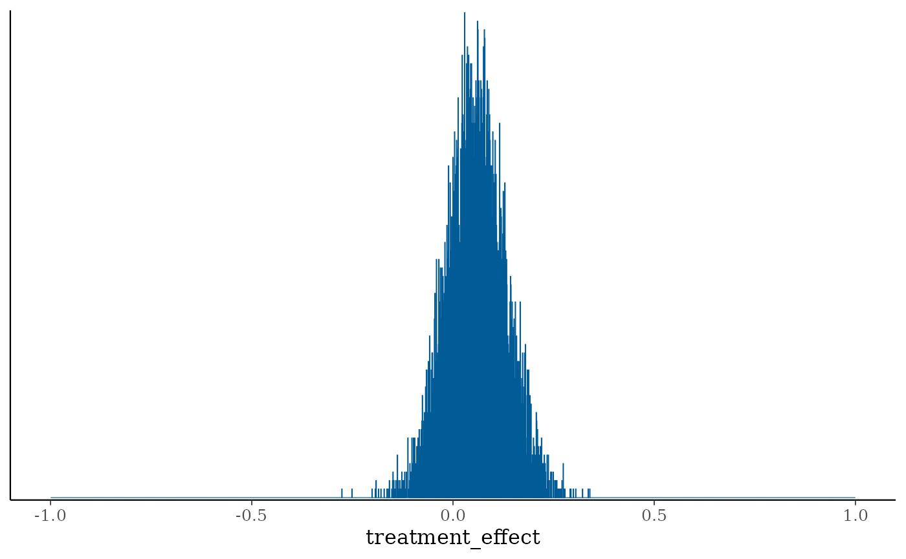
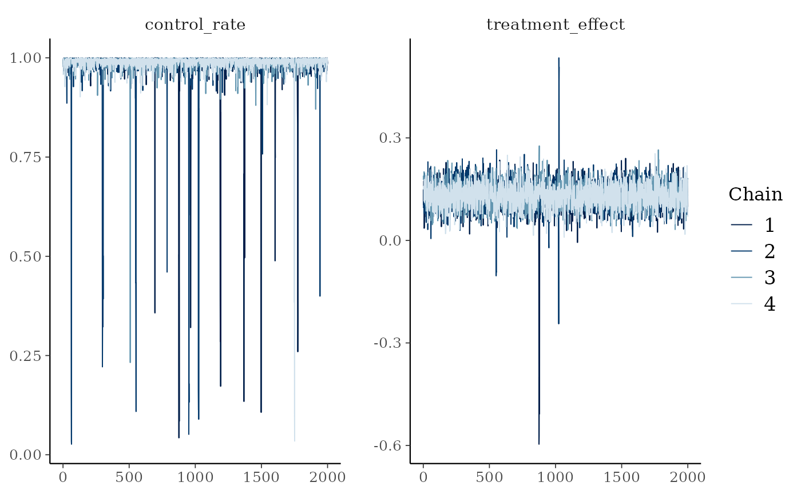
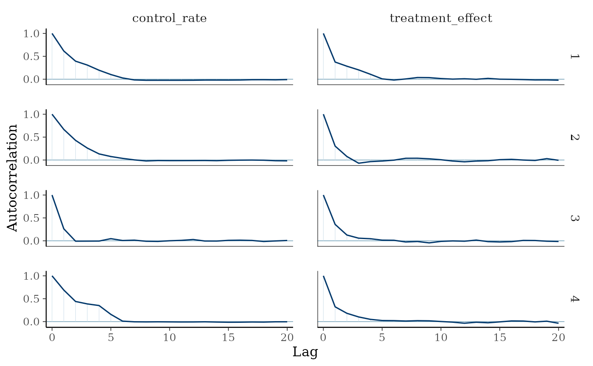
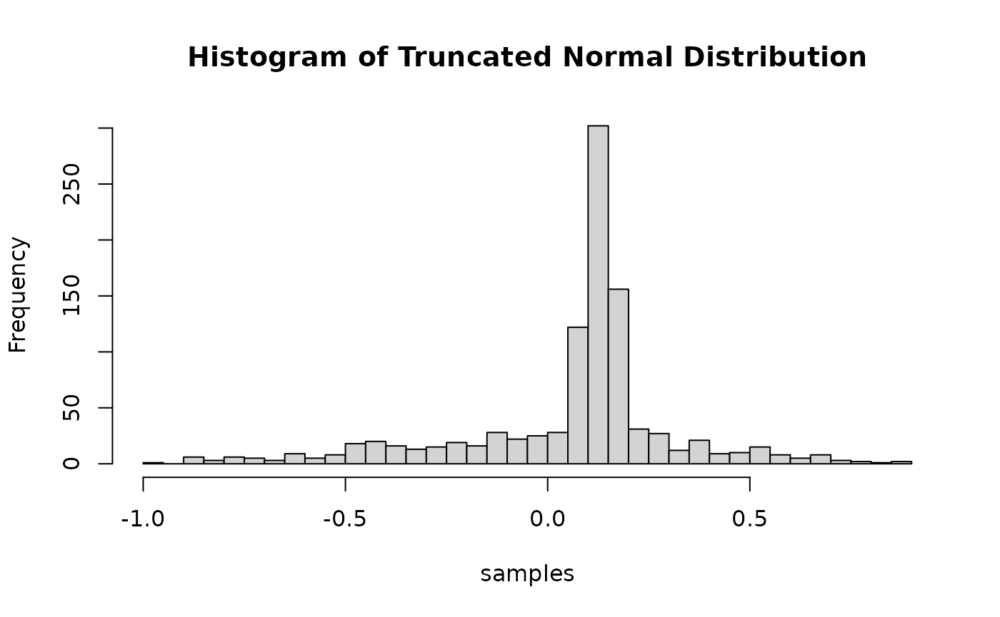
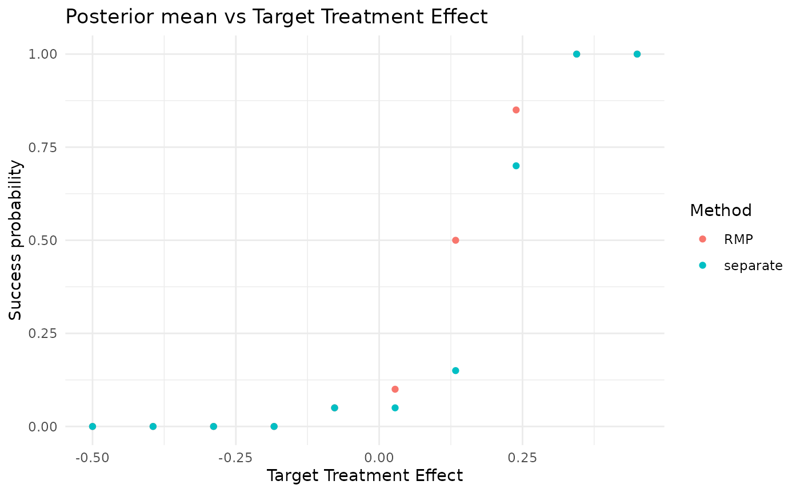
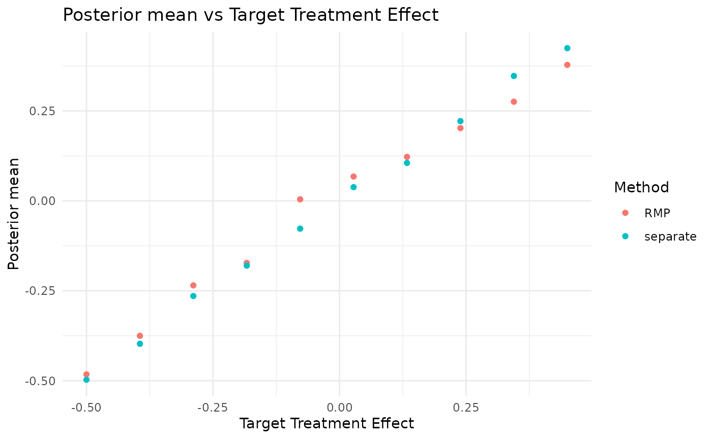

Simulation study : RMP for binary endpoints without normal approximation for the treatment effect distribution
Tristan Fauvel, Quinten Health & Daniel Lee
2026-09-11
Source:vignettes/methods/Truncated_Gaussian_RMP.Rmd
Truncated_Gaussian_RMP.RmdIntroduction
This vignette describes an implementation of the Truncated Gaussian Robust Mixture Prior when the treatment effect is the difference between the success rate in the treatment arm and the success rate in the control arm.
Set working directory, import functions and configurations
List packages to load, and install them if necessary.
Load the data for the Aprepitant case study
set.seed(42)
config_path <- system.file("conf/simulation_config.yml", package = "RBExT")
simulation_config <- yaml::yaml.load_file(config_path)
case_study <- "aprepitant"
config_path <- system.file("conf/case_studies/aprepitant.yml", package = "RBExT")
case_study_config <- yaml::yaml.load_file(config_path)
source_data <- ObservedSourceData$new(case_study_config)
treatment_effect_standard_error <- case_study_config$target$standard_error
target_data <- ObservedTargetData$new(treatment_effect_estimate = case_study_config$target$treatment_effect, treatment_effect_standard_error = treatment_effect_standard_error, target_sample_size_per_arm = as.integer(case_study_config$target$total / 2), summary_measure_likelihood = case_study_config$summary_measure_likelihood)RMP for the rate difference
In the figure below, we represent the model used in the case where the treatment effect is a difference of rates, with a robust mixture prior on the treatment effect :
 The
model can be summarized as follows:
The
model can be summarized as follows:
- and we put a Truncated Gaussian Robust Mixture Prior on the treatment effect. This is the same logic as the standard Gaussian RMP, but the components are truncated between -1 and 1. That is : where is the truncated normal distribution between -1 and 1, with p.d.f.:
Implementation of the model in Stan
Let us define the Stan model:
stan_model_code <- "
data {
int<lower = 0> n_treatment;
int<lower = 0> n_control;
int<lower = 0, upper = n_treatment> successes_treatment;
int<lower = 0, upper = n_control> successes_control;
real<lower = 0, upper = 1> w;
real vague_mean;
real<lower = 0> vague_sd;
real info_mean;
real<lower = 0> info_sd;
}
transformed data {
int<lower = 0, upper = 1> debug = 0;
}
parameters {
real<lower = 0, upper = 1> control_rate;
real<lower = - control_rate, upper = 1 - control_rate> treatment_effect;
}
transformed parameters {
real<lower = 0, upper = 1> treatment_rate = control_rate + treatment_effect;
real vague_normalizing_constant = normal_cdf(1-control_rate | vague_mean, vague_sd) - normal_cdf(-control_rate | vague_mean, vague_sd);
real info_normalizing_constant = normal_cdf(1-control_rate | info_mean, info_sd) - normal_cdf(-control_rate | info_mean, info_sd);
real log_vague_normalizing_constant = log(vague_normalizing_constant);
real log_info_normalizing_constant = log(info_normalizing_constant);
}
model {
// Robust mixture prior
control_rate ~ uniform(0, 1);
target += log_mix(w,
normal_lpdf(treatment_effect | vague_mean, vague_sd) - log_vague_normalizing_constant,
normal_lpdf(treatment_effect | info_mean, info_sd) - log_info_normalizing_constant);
successes_control ~ binomial(n_control, control_rate);
successes_treatment ~ binomial(n_treatment, treatment_rate);
}
"
# Write the Stan code to a temporary file
stan_file_path <- cmdstanr::write_stan_file(stan_model_code)
# Compile the model
mod <- cmdstanr::cmdstan_model(stan_file_path)
# Specify the parameters
data_list <- list(
w = 0.5,
n_treatment = case_study_config$target$treatment,
n_control = case_study_config$target$control,
successes_treatment = case_study_config$target$responses$treatment,
successes_control = case_study_config$target$responses$control,
vague_mean = 0,
vague_sd = sqrt(target_data$sample$treatment_effect_standard_error^2 * target_data$sample_size_per_arm),
info_mean = case_study_config$source$treatment_effect,
info_sd = case_study_config$source$standard_error
)
print(data_list)## $w
## [1] 0.5
##
## $n_treatment
## [1] 55
##
## $n_control
## [1] 52
##
## $successes_treatment
## [1] 48
##
## $successes_control
## [1] 42
##
## $vague_mean
## [1] 0
##
## $vague_sd
## [1] 0.3898863
##
## $info_mean
## [1] 0.1315456
##
## $info_sd
## [1] 0.03505291We can now sample from the posterior:
# Sample from the posterior
fit <- mod$sample(
data = data_list,
chains = 4,
parallel_chains = 4,
iter_sampling = 2000,
iter_warmup = 1000
)
bayesplot::mcmc_hist(fit$draws("treatment_effect"), binwidth = 0.001) + xlim(-1, 1)
hist(fit$draws("treatment_effect"), breaks = 10001, freq = FALSE)By contrast, if we set w = 1 (equivalent to a separate analysis):
# Specify the parameters
data_list$w <- 1
# Sample from the posterior
fit <- mod$sample(
data = data_list,
chains = 4,
parallel_chains = 4,
iter_sampling = 2000,
iter_warmup = 1000
)
hist(fit$draws("treatment_effect"), breaks = 10001, freq = FALSE)Sampling from the prior
Let us modify the Stan model to allow sampling from the prior distribution of the treatment effect:
stan_prior_code <- "
data {
real<lower = 0, upper = 1> w;
real vague_mean;
real<lower = 0> vague_sd;
real info_mean;
real<lower = 0> info_sd;
}
transformed data {
int<lower = 0, upper = 1> debug = 0;
}
parameters {
real<lower = 0, upper = 1> control_rate;
real<lower = -1, upper = 1> treatment_effect;
}
transformed parameters {
real treatment_rate = control_rate + treatment_effect;
}
model {
// Robust mixture prior
control_rate ~ uniform(0, 1);
real vague_normalizing_constant = normal_cdf(1-control_rate | vague_mean, vague_sd) - normal_cdf(-control_rate | vague_mean, vague_sd);
real info_normalizing_constant = normal_cdf(1-control_rate | info_mean, info_sd) - normal_cdf(-control_rate | info_mean, info_sd);
real log_vague_normalizing_constant = log(vague_normalizing_constant);
real log_info_normalizing_constant = log(info_normalizing_constant);
target += log_mix(w,
normal_lpdf(treatment_effect | vague_mean, vague_sd) - log_vague_normalizing_constant,
normal_lpdf(treatment_effect | info_mean, info_sd) - log_info_normalizing_constant);
}
"
# Write the Stan code to a temporary file
stan_file_path <- cmdstanr::write_stan_file(stan_prior_code)
# Compile the model
mod <- cmdstanr::cmdstan_model(stan_file_path)
# Specify the parameters
data_list <- list(
w = 0.5,
vague_mean = 0,
vague_sd = sqrt(target_data$sample$treatment_effect_standard_error^2 * target_data$sample_size_per_arm),
info_mean = case_study_config$source$treatment_effect,
info_sd = case_study_config$source$standard_error
)We can now sample from the posterior:
# Sample from the prior
fit <- mod$sample(
data = data_list,
chains = 4,
parallel_chains = 4,
iter_sampling = 2000,
iter_warmup = 1000
)
hist(fit$draws("treatment_effect"), breaks = 10001, freq = FALSE)
library(posterior)
draws_array <- as_draws_array(fit)
library(bayesplot)
mcmc_trace(draws_array, pars = c("control_rate", "treatment_effect"))

Actually, in the case of a mixture of truncated normal distributions, we can more easily sample directly from the prior using the truncnorm package.
# Load the truncnorm package
library(truncnorm)
n_samples <- 1000
w <- 0.5
vague_prior_mean <- 0
vague_prior_sd <- sqrt(target_data$sample$treatment_effect_standard_error^2 * target_data$sample_size_per_arm)
info_prior_mean <- case_study_config$source$treatment_effect
info_prior_sd <- case_study_config$source$standard_error
component_choice <- sample(
x = c(0, 1),
size = n_samples,
replace = TRUE,
prob = c(1 - w, w)
)
samples <- rep(0, n_samples)
lower <- -1 # Lower truncation point
upper <- 1 # Upper truncation point
samples[component_choice == 0] <- rtruncnorm(
n = sum(component_choice == 0),
mean = vague_prior_mean,
sd = vague_prior_sd,
a = lower,
b = upper
)
samples[component_choice == 1] <- rtruncnorm(
n = sum(component_choice == 1),
mean = info_prior_mean,
sd = info_prior_sd,
a = lower,
b = upper
)
# Plot the histogram of the samples
hist(samples, breaks = 30, main = "Histogram of Truncated Normal Distribution")
Simulation
Separate analysis:
separate_method <- "separate"
method_parameters <- list(
initial_prior = "noninformative", # This corresponds to the fact that the posterior for the adults data is derived from an uninformative prior (for consistency with other methods).
empirical_bayes = FALSE # Corresponds to whether some parameters of the prior are based on observed data.
)
env <- "full"
config_dir <- paste0(system.file(paste0("conf/", env), package = "RBExT"), "/")
mcmc_config <- yaml::read_yaml(paste0(config_dir, "/mcmc_config.yml"))
separate_model <- Model$new()
separate_model <- separate_model$create(
case_study_config = case_study_config,
method = separate_method,
method_parameters = method_parameters,
source_data = source_data,
mcmc_config = mcmc_config
)
target_sample_size_per_arm <- as.integer(case_study_config$target$total / 2)
# The truncated RMP itself, which the simulation below compares against the
# separate analysis. prior_weight is the weight on the informative component,
# matching the w used for the prior samples above.
method <- "RMP"
rmp_method_parameters <- list(
initial_prior = "noninformative",
prior_weight = 0.5,
empirical_bayes = FALSE
)
model <- Model$new()
model <- model$create(
case_study_config = case_study_config,
method = method,
method_parameters = rmp_method_parameters,
source_data = source_data,
mcmc_config = mcmc_config
)
# The treatment effect is a difference of rates, so the grid has to keep both
# arm rates inside [0, 1]. That caps it at roughly [-0.53, 0.47] for this case
# study, unlike the unbounded log odds ratio grid the Gaussian RMP vignette uses.
treatment_effect_values <- seq(-0.5, 0.45, length.out = 10)
n <- length(treatment_effect_values)
confidence_level <- simulation_config$confidence_level
null_space <- case_study_config$null_space
# Each RMP replicate is a full MCMC fit, so this stays small to keep the
# documentation build quick. Raise it for a smoother success-probability curve.
n_replicates <- 20
separate_test_decisions <- matrix(rep(0, n * n_replicates), nrow = n)
separate_posterior_means <- matrix(rep(0, n * n_replicates), nrow = n)
separate_posterior_medians <- matrix(rep(0, n * n_replicates), nrow = n)
separate_credible_intervals <- array(rep(0, n * n_replicates * 2), dim = c(n, n_replicates, 2))
separate_prior_proba_no_benefit <- rep(0, n)
theta_0 <- case_study_config$theta_0
critical_value <- simulation_config$critical_value
for (i in seq_along(treatment_effect_values)) {
drift <- treatment_effect_values[i] - source_data$treatment_effect_estimate
target_data <- TargetDataFactory$new()
target_data <- target_data$create(source_data = source_data, case_study_config = case_study_config, target_sample_size_per_arm = target_sample_size_per_arm, treatment_drift = drift, summary_measure_likelihood = source_data$summary_measure_likelihood)
results <- separate_model$simulation_for_given_treatment_effect(target_data = target_data, n_replicates = n_replicates, critical_value = critical_value, theta_0 = theta_0, confidence_level = confidence_level, null_space = null_space, to_return = c("test_decision", "posterior_mean", "posterior_median", "credible_interval"), method = method, case_study = case_study, n_samples_quantiles_estimation = simulation_config$n_samples_quantiles_estimation)
separate_test_decisions[i, ] <- results$test_decisions
separate_posterior_means[i, ] <- results$posterior_means
separate_posterior_medians[i, ] <- results$posterior_medians
separate_credible_intervals[i, , ] <- matrix(results$credible_intervals, nrow = n_replicates)
}
test_decisions <- matrix(rep(0, n * n_replicates), nrow = n)
posterior_means <- matrix(rep(0, n * n_replicates), nrow = n)
posterior_medians <- matrix(rep(0, n * n_replicates), nrow = n)
credible_intervals <- array(rep(0, n * n_replicates * 2), dim = c(n, n_replicates, 2))
prior_proba_no_benefit <- rep(0, n)
for (i in seq_along(treatment_effect_values)) {
drift <- treatment_effect_values[i] - source_data$treatment_effect_estimate # This implies that target_data$treatment_effect <- treatment_effect_values[i]
target_data <- TargetDataFactory$new()
target_data <- target_data$create(source_data = source_data, case_study_config = case_study_config, target_sample_size_per_arm = target_sample_size_per_arm, treatment_drift = drift, summary_measure_likelihood = source_data$summary_measure_likelihood)
# target_data$sampling_approximation <- TRUE
results <- model$simulation_for_given_treatment_effect(target_data = target_data, n_replicates = n_replicates, critical_value = critical_value, theta_0 = theta_0, confidence_level = confidence_level, null_space = null_space, to_return = c("test_decision", "posterior_mean", "posterior_median", "credible_interval"), method = method, case_study = case_study, n_samples_quantiles_estimation = simulation_config$n_samples_quantiles_estimation)
test_decisions[i, ] <- results$test_decisions
posterior_means[i, ] <- results$posterior_means
posterior_medians[i, ] <- results$posterior_medians
credible_intervals[i, , ] <- matrix(results$credible_intervals, nrow = n_replicates)
}
conditional_proba_success <- rowMeans(test_decisions) # Contains Pr(Study success | theta_T)
data <- data.frame(conditional_proba_success = conditional_proba_success, treatment_effect_values = treatment_effect_values, method = method)
separate_conditional_proba_success <- rowMeans(separate_test_decisions) # Contains Pr(Study success | theta_T)
separate_data <- data.frame(conditional_proba_success = separate_conditional_proba_success, treatment_effect_values = treatment_effect_values, method = separate_method)
combined_data <- rbind(data, separate_data)
plt <- ggplot(combined_data, aes(x = treatment_effect_values, y = conditional_proba_success, color = method)) +
geom_point() +
ggplot2::labs(
title = "Posterior mean vs Target Treatment Effect",
x = "Target Treatment Effect",
y = "Success probability",
color = "Method"
) +
theme_minimal()
print(plt)
separate_conditional_posterior_means <- rowMeans(separate_posterior_means)
separate_data <- data.frame(conditional_posterior_means = separate_conditional_posterior_means, treatment_effect_values = treatment_effect_values, method = separate_method)
conditional_posterior_means <- rowMeans(posterior_means)
data <- data.frame(conditional_posterior_means = conditional_posterior_means, treatment_effect_values = treatment_effect_values, method = method)
combined_data <- rbind(data, separate_data)
plt <- ggplot(combined_data, aes(x = treatment_effect_values, y = conditional_posterior_means, color = method)) +
geom_point() +
ggplot2::labs(
title = "Posterior mean vs Target Treatment Effect",
x = "Target Treatment Effect",
y = "Posterior mean",
color = "Method"
) +
theme_minimal()
print(plt)
## R version 4.2.0 (2022-04-22)
## Platform: x86_64-pc-linux-gnu (64-bit)
## Running under: Ubuntu 24.04.5 LTS
##
## Matrix products: default
## BLAS: /usr/lib/x86_64-linux-gnu/openblas-pthread/libblas.so.3
## LAPACK: /usr/lib/x86_64-linux-gnu/openblas-pthread/libopenblasp-r0.3.26.so
##
## locale:
## [1] LC_CTYPE=C.UTF-8 LC_NUMERIC=C LC_TIME=C.UTF-8
## [4] LC_COLLATE=C.UTF-8 LC_MONETARY=C.UTF-8 LC_MESSAGES=C.UTF-8
## [7] LC_PAPER=C.UTF-8 LC_NAME=C LC_ADDRESS=C
## [10] LC_TELEPHONE=C LC_MEASUREMENT=C.UTF-8 LC_IDENTIFICATION=C
##
## attached base packages:
## [1] stats graphics grDevices datasets utils methods base
##
## other attached packages:
## [1] truncnorm_1.0-9 bayesplot_1.16.0.9000 posterior_1.7.1
## [4] cmdstanr_0.9.0 ggplot2_4.0.3 RBExT_0.0.2
##
## loaded via a namespace (and not attached):
## [1] matrixStats_1.5.0 fs_2.1.0 assertions_0.3.0
## [4] progress_1.2.3 doParallel_1.0.17 RColorBrewer_1.1-3
## [7] rstan_2.32.7 latex2exp_0.9.8 tensorA_0.36.2.1
## [10] tools_4.2.0 backports_1.5.1 bslib_0.12.0
## [13] R6_2.6.1 otel_0.2.0 withr_3.0.3
## [16] prettyunits_1.2.0 tidyselect_1.2.1 gridExtra_2.3.1
## [19] processx_3.9.0 compiler_4.2.0 extrafontdb_1.1
## [22] textshaping_1.0.5 cli_3.6.6 HDInterval_0.2.4
## [25] xml2_1.6.0 desc_1.4.3 labeling_0.4.3
## [28] sass_0.4.10 scales_1.4.0 checkmate_2.3.4
## [31] mvtnorm_1.4-2 S7_0.2.2 readr_2.2.0
## [34] pkgdown_2.2.1 QuickJSR_1.11.0 systemfonts_1.3.2
## [37] stringr_1.6.0 digest_0.6.39 StanHeaders_2.39.1
## [40] rmarkdown_2.32 svglite_2.2.2 pkgconfig_2.0.3
## [43] htmltools_0.5.9 extrafont_0.20 fastmap_1.2.0
## [46] pwr_1.3-0 htmlwidgets_1.6.4 rlang_1.3.0
## [49] rstudioapi_0.19.0 jquerylib_0.1.4 farver_2.1.2
## [52] generics_0.1.4 jsonlite_2.0.0 dplyr_1.2.1
## [55] distributional_0.9.0 inline_0.3.21 magrittr_2.0.5
## [58] kableExtra_1.4.1 Formula_1.2-6 loo_2.10.1.9000
## [61] Rcpp_1.1.2 abind_1.4-8 viridis_0.6.5
## [64] lifecycle_1.0.5 stringi_1.8.9 yaml_2.3.12
## [67] plyr_1.8.9 pkgbuild_1.4.8 grid_4.2.0
## [70] parallel_4.2.0 crayon_1.5.3 hms_1.1.4
## [73] knitr_1.52 ps_1.9.3 pillar_1.11.1
## [76] reshape2_1.4.5 codetools_0.2-18 stats4_4.2.0
## [79] rstantools_2.7.1 glue_1.8.1 evaluate_1.0.5
## [82] data.table_1.18.6.1 renv_1.0.11 RcppParallel_6.2.1
## [85] vctrs_0.7.3 tzdb_0.5.0 Rdpack_2.6.6
## [88] foreach_1.5.2 Rttf2pt1_1.3.14 gtable_0.3.6
## [91] purrr_1.2.2 tidyr_1.3.2 assertthat_0.2.1
## [94] cachem_1.1.0 xfun_0.60 rbibutils_2.4.1
## [97] tidyverse_2.0.0 roxygen2_8.1.0 ragg_1.5.2
## [100] viridisLite_0.4.3 Bolstad2_1.0-29 RBesT_1.11-0
## [103] tibble_3.3.1 iterators_1.0.14